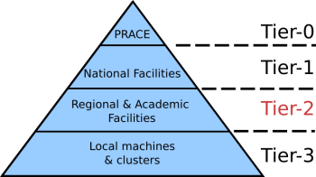
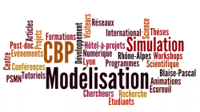

Accueil
Le Pôle Scientifique de Modélisation Numérique - PSMN
Le PSMN est la plate-forme scientifique de l'ENS de Lyon hébergeant les ressources en calcul haute performance. Il fournit un accès immédiat et souple à des moyens de calcul importants (12 000 coeurs fin 2019, ~30 000 coeurs fin 2022). L'équipe d'ingénieurs du PSMN assure le maintien en condition opérationnelle des clusters, l'installation des logiciels, ainsi que la formation et l'accompagnement des utilisateurs dans le domaine du calcul haute performance.
Avec ses homologues des autres établissements lyonnais (P2CHPD à Lyon I et PMCS2I à l'ECL), le PSMN forme le méso-centre de calcul de la Fédération Lyonnaise de Modélisation et Sciences Numériques . Ce méso-centre régional est un des plus important de ce type en France, il héberge l'équipement d'excellence lyonnais du projet Equip@Meso coordonné par GENCI (Grand Équipement National de Calcul Intensif).
Dans la hiérarchie des centres de calcul européens, le méso-centre lyonnais FLMSN assure l'échelle régionale, ou “Tier-2”. Les centres de calcul nationaux de GENCI assurent quant à eux le “Tier-1”, et enfin les super-calculateurs les plus grands à l'échelle Européenne (tels que PRACE) assurent le “Tier-0”.

Le Centre Blaise Pascal - CBP

Le Centre Blaise Pascal est une “maison de la modélisation”, un lieu de conférences, de recherche et de formation liées à la modélisation numérique dans tous les domaines scientifiques. Le CBP dispose d'une infrastructure numérique complète (salle de TP, clusters de calcul, serveurs dédiés, forge logicielle, outils de travail collaboratif, etc.), des bureaux et des salles de séminaires et de conférences.
La partie recherche fonctionne sur le modèle “hôtel à projets” et offre un soutien pendant la durée déterminée d'un projet scientifique. Nous accueillons dans nos murs des chercheurs et des groupes de travail intéressés dans le développement de nouvelles méthodes et de nouveaux outils numériques en phase avec l'avancée de la technologie. Nous leur fournissons un environnement de travail puissant et exportable dans toute l'école et nous offrons un soutien informatique et mathématique général pour le développement de codes, l'intégration de logiciels, le stockage, l'analyse et la publication de données. La partie formation du CBP est intégrée dans les programmes de Masters et les écoles doctorales de l'Université de Lyon. La composante conférence et animation scientifique interdisciplinaire assure le contact entre étudiants, ingénieurs et chercheurs lyonnais avec les meilleurs spécialistes nationaux et internationaux.
Qui fait quoi et pourquoi ?
“Les sciences du calcul seront l'outil majeur du XXIe siècle” (PITAC report: Computational Science: Ensuring America's Competitiveness, President's Information Technology Advisory Committee, USA, June 2005)
L'outil numérique rend possible la résolution des équations fondamentales des sciences mathématiques et est indispensable pour le stockage et l'analyse de données expérimentales en croissance exponentielle. En effet, l'informatique a acquis un statut d'instrument incontournable dans l'intégration de nos connaissances et la maîtrise des systèmes complexes. Si ce constat est déjà ancien pour les sciences de la nature qui, de longue date, se sont appropriées l'ordinateur comme instrument parmi d'autres, les développements récents des humanités numériques montrent qu'il est à présent tout aussi valable pour les sciences humaines et sociales. Pour chacune des étapes de la démarche scientifique, il est donc nécessaire de disposer d'une informatique dédiée à la recherche, capable d'accompagner, sinon d'anticiper, les besoins des chercheurs.
Ensemble, le PSMN et le CBP assurent le rôle d'un centre de ressource et compétence de l'informatique pour la recherche à l'ENS de Lyon et offrent des services complémentaire aux capacités spécifiques de ses laboratoires. Le PSMN est un centre de calcul haute performance regroupant et mutualisant les moyens au sein de l'école. Si la disponibilité de ressources de calcul et stockage adéquates constitue un problème essentiel pour le progrès en science numérique, il en a d'autres aussi important. Une focalisation sur le “silicium”, les (péta)flops et les (téra)octet a des limitations inhérentes qui se révèlent dans une analogie avec les ordinateurs personnels: leur impact sur le monde moderne ne s'explique pas par l'explosion de leurs capacités en soi mais par le développement parallèle de logiciels d'application et par la motivation et le savoir faire des utilisateurs. La même logique s'applique en science. Avec le CBP, l'ENS a mis en place une de première “maisons de la modélisation” en France avec une infrastructure numérique (salle TP, serveurs, forge logiciel, outils de travail collaboratif,etc), des bureaux et de salles de séminaire et conférences et une mission de soutien pour la recherche, la formation et l'animation scientifique dans le domaine.